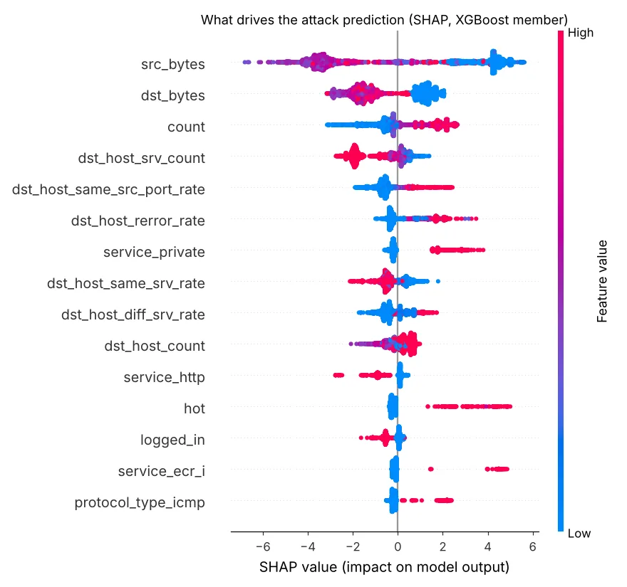

T1498 / T1499DoS
Network and endpoint denial of service, e.g. SYN floods (neptune) and ICMP floods. Category recall 83%.
Network intrusion detection: ensemble ML, zero-day anomalies and SHAP
A supervised ensemble (Logistic Regression + Random Forest + XGBoost) catches known attacks, and an Isolation Forest trained only on normal traffic catches attacks it has never seen. SHAP explains every alert for a SOC analyst, and a REST API scores flows in real time.

Triage demo: 3,000 flows → 1,231 alerting flows → 141 incidents. Only 3% of alerting flows were normal traffic; the top 10 incidents hold 58% of alerts.
[01] ~/the-problem
Signature-like ML IDS look great on random splits and fall apart on new attacks: on this test set the supervised ensemble catches 77% of known attack types but only 33% of new ones.
A SOC team also can’t act on a bare probability. Every alert needs its reasons, and thousands of flows need grouping into incidents, most severe first.
An anomaly detector that only knows “normal” raises zero-day detection about 1.7× while keeping false positives under 3%.
[02] ~/how-it-works
Known attacks, unknown attacks and explanations, then grouped into incidents an analyst can work.
40 NSL-KDD flow features: one-hot protocol/service/flag, log-scaling for heavy-tailed byte and count features, standardisation.
Soft voting (LR:RF:XGB = 1:2:2) for attack vs normal, plus a 5-class XGBoost for the category (DoS, Probe, R2L, U2R).
Isolation Forest fitted on normal traffic only; threshold at the 99th percentile of normal scores (~1% false-positive budget).
Alert if either detector fires; tag zero_day_anomaly when only the anomaly model saw it.
TreeExplainer on the XGBoost member returns the top 5 reasons per flow, e.g. tiny src_bytes with a high connection count (SYN flood).
nids.triage groups alerts by category, service and flag, ranks incidents and writes CSVs: 3,000 flows → 141 incidents (105 high severity).
[03] ~/threat-coverage
NSL-KDD attack categories mapped to the closest MITRE ATT&CK techniques.
Network and endpoint denial of service, e.g. SYN floods (neptune) and ICMP floods. Category recall 83%.
Network service discovery: port and host scans. Category recall 65%.
Remote-to-local access such as password guessing and exploiting exposed services. Recall 9%: rare in training.
User-to-root privilege escalation. Recall 5%: rare in training, mostly unseen in test.
[04] ~/results
Official KDDTest+ (22,544 flows). Full metrics and confusion matrices are in results/metrics.json.
| MODEL | ACCURACY | PRECISION | DETECTION RATE | FPR | ROC-AUC |
|---|---|---|---|---|---|
| Logistic Regression | 74.5% | 91.3% | 60.9% | 7.6% | 0.793 |
| Random Forest | 78.3% | 96.9% | 63.9% | 2.7% | 0.963 |
| XGBoost | 79.3% | 96.9% | 65.9% | 2.8% | 0.970 |
| Isolation Forest (normal-only) | 74.3% | 97.8% | 56.2% | 1.7% | 0.949 |
| Hybrid (ensemble OR anomaly) | 82.1% | 97.0% | 70.8% | 2.9% | – |
XGBoost alone scores slightly higher than the soft-voting ensemble (ROC-AUC 0.970 vs 0.961), so using it alone would be a fair simplification.
HONEST LIMITS
— NSL-KDD is an old benchmark; live captures (NetFlow, CICFlowMeter) have different features and need converting.
— R2L / U2R recall is low (9% / 5%) because those classes are rare in training and mostly unseen in test.
WHAT I’D DO NEXT
→ Real-data rerun on CIC-IDS2017 is the next milestone (replaces the 2009 benchmark)
→ Retrain and validate on CIC-IDS2017 / UNSW-NB15
→ Live capture: CICFlowMeter → API from a SPAN port
→ Autoencoder anomaly detector and drift monitoring
→ Alert forwarding to a SIEM (Wazuh / Splunk HEC)